Convolutional Neural Networks (CNNs)#
import matplotlib.pyplot as plt
import numpy as np
import pandas as pd
import random
from sklearn.metrics import accuracy_score, ConfusionMatrixDisplay
from sklearn.model_selection import StratifiedShuffleSplit
import torch
import torch.nn as nn
import torch.nn.functional as F
from torchsummary import summary
from torchvision import models
from torchvision.datasets import MNIST
from torchvision.transforms import Compose, Lambda
from torchvision.utils import make_grid
from torch.utils.data import TensorDataset, DataLoader, Dataset
from monai.networks.nets import UNet
import warnings
warnings.filterwarnings('ignore')
def set_seed(seed):
"""Set ALL the random seeds to a fixed value and take out any randomness from cuda kernels."""
random.seed(seed)
np.random.seed(seed)
torch.manual_seed(seed)
torch.cuda.manual_seed_all(seed)
torch.backends.cudnn.benchmark = False # uses the inbuilt cudnn auto-tuner to find the fastest convolution algorithms.
# Useful when inputs do not change size.
torch.backends.cudnn.enabled = False
return True
# Set up device
device = 'cpu'
if torch.cuda.device_count() > 0 and torch.cuda.is_available():
print("Cuda installed! Running on GPU!")
device = 'cuda'
else:
print("No GPU available!")
device = 'cpu'
No GPU available!
Convolution#
Convolution คือการดำเนินการทางคณิตศาสตร์ระหว่างสองฟังก์ชัน ซึ่งมีผลลัพธ์มาจากการคูณสมาชิกที่ตำแหน่งต่าง ๆ แล้วนำมารวมกัน
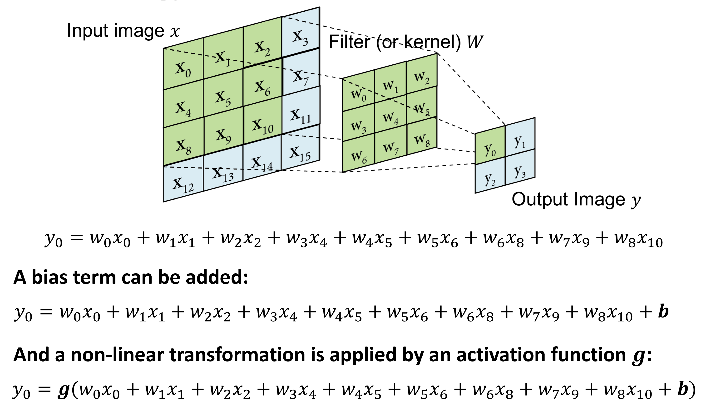
Convolution มี 4 parameter ที่เกี่ยวข้อง ดังนี้
Input image size: \(n \times n\)
Filter/kernel size: \(f \times f\)
Padding (added size of padded image to be convoluted): \(p\)
Stride (step size of the kernel): \(s\)
Output image จะมีขนาดคือ
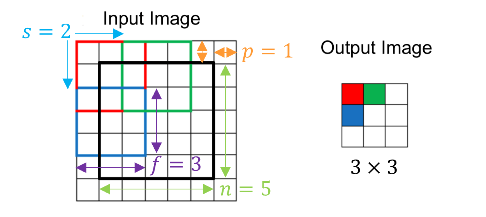
ตัวอย่างเพิ่มเติม


เราจะใช้ convolution ในการสร้าง convolution neural networks (CNNs)
Convolutional Neural Networks (CNNs)#
เราจะใช้ architecture แบบ LeNet-5 ซึ่งมีโครงสร้างเป็นดังภาพ
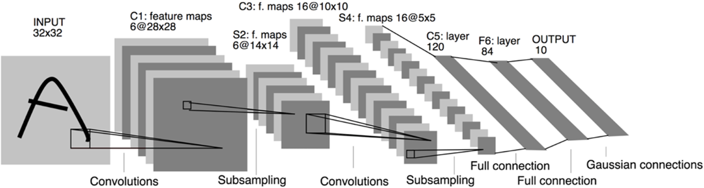
LeNet-5 มีขั้นตอนต่อไปนี้
Convolution ได้ Feature map หลายอัน ซึ่งเกิดจาก input image ถูก convoluted โดยใช้ filter ที่ต่างกัน
Subsampling (pooling) เป็นการลด dimensionality ของข้อมูล โดยการเอาค่าใน feature map ที่อยู่ในกรอบ filter มาใช้ (เช่น max, avg) ใช้เป็นค่าของแต่ละ pixel ใน feature map ใหม่ที่มีขนาดเล็กลง (stride มักจะเท่ากับ filter size)
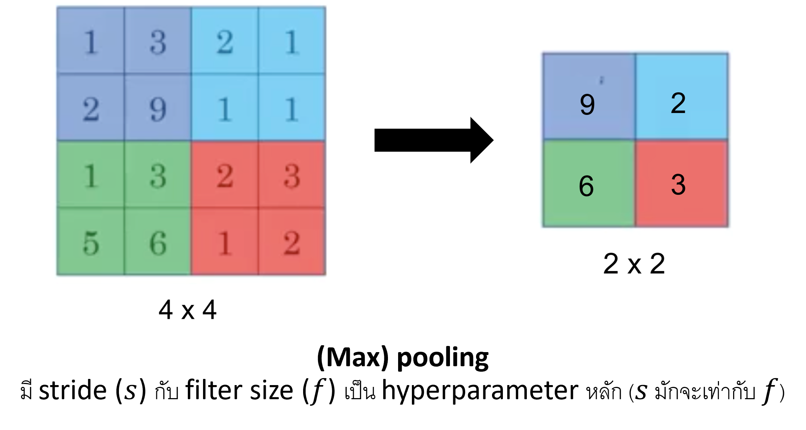
จากนั้นเอาค่าใน feature map ที่ได้มาเรียงเป็น vector แล้วนำไปใช้ทำ classification ต่อไป
จำนวน trainable parameter (ซึ่งก็คือสัมประสิทธิ์ใน filter และอาจมี bias ด้วยหรือไม่ก็ได้) ของ CNN จะขึ้นกับ filter size และจำนวน channel หรือ feature map ในแต่ละ layer ส่วน parameter อื่น ๆ เป็น hyperparameter เราต้องกำหนดเอง หรือ search หาค่าที่ดีที่สุด
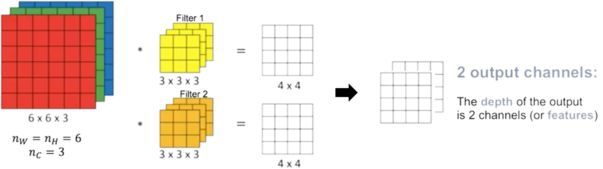
Exercise: If I have a layer with 10 features, each of size 50x50, and I apply 25 filters of size 3x3x10 and stride 1, no padding. What is the size and number channels of the next layer?
Answer: 25 channels, each of size 48x48.
class LeNet5(nn.Module):
"""Class of the LeNet-5 model"""
def __init__(self):
super(LeNet5, self).__init__()
self.c1 = nn.Conv2d(1, 6, kernel_size=5, stride=1, padding=2) # 2D convolutional layer
# Input มีขนาด 28x28 มี padding=2 กลายเป็น 32x32
# 32x32 ถูก convoluted กลายเป็น 28x28
self.s2 = nn.MaxPool2d(kernel_size=2, stride=2) # Maxpool layer
# 28x28 ถูก subsampled กลายเป็น 14x14
self.c3 = nn.Conv2d(6, 16, kernel_size=5, stride=1) # 2D convolutional layer
# 14x14 ถูก convoluted กลายเป็น 10x10
self.s4 = nn.MaxPool2d(kernel_size=2, stride=2) # Maxpool layer
# 10x10 ถูก subsampled กลายเป็น 5x5
self.c5 = nn.Linear(16*5*5, 120) # First linear layer
self.f6 = nn.Linear(120, 84) # Second linear layer
self.output = nn.Linear(84, 10) # Final output layer
self.act = nn.ReLU() # Activation function
def forward(self, x):
x = self.act(self.c1(x))
x = self.act(self.s2(x))
x = self.act(self.c3(x))
x = self.act(self.s4(x))
x = x.view(-1, x.size(1)*x.size(2)*x.size(3)) # flatten (return a "flattened" view of the 3D tensor
# as inputs for the fully connected layer)
x = self.act(self.c5(x))
x = self.act(self.f6(x))
return self.output(x)
x = torch.randn((1, 1, 28, 28))
model = LeNet5()
y = model(x)
print(y)
print(model)
tensor([[-0.0448, 0.0478, 0.0956, -0.0344, 0.0074, -0.0921, 0.0452, -0.0862,
0.0848, -0.0400]], grad_fn=<AddmmBackward0>)
LeNet5(
(c1): Conv2d(1, 6, kernel_size=(5, 5), stride=(1, 1), padding=(2, 2))
(s2): MaxPool2d(kernel_size=2, stride=2, padding=0, dilation=1, ceil_mode=False)
(c3): Conv2d(6, 16, kernel_size=(5, 5), stride=(1, 1))
(s4): MaxPool2d(kernel_size=2, stride=2, padding=0, dilation=1, ceil_mode=False)
(c5): Linear(in_features=400, out_features=120, bias=True)
(f6): Linear(in_features=120, out_features=84, bias=True)
(output): Linear(in_features=84, out_features=10, bias=True)
(act): ReLU()
)
# Download the MNIST dataset
train_set = MNIST("../data", download=True, train=True)
test_set = MNIST("../data", download=True, train=False)
# Split the data
shuffler = StratifiedShuffleSplit(
n_splits=1, test_size=0.1, random_state=42
).split(train_set.train_data, train_set.train_labels)
indices = [(train_idx, validation_idx) for train_idx, validation_idx in shuffler][0]
# Convert the tensor to a floating-point data type
train_data_tensor = train_set.train_data.to(torch.float32)
# Calculate min, max, mean and std
min_value = train_data_tensor.min()
max_value = train_data_tensor.max()
mean = torch.mean(train_data_tensor/255)
std = torch.std(train_data_tensor/255)
print(f"min = {min_value}\nmax = {max_value}\nmean = {mean}\nstd = {std}")
min = 0.0
max = 255.0
mean = 0.13066047430038452
std = 0.30810782313346863
# Standardise the data
standardise = lambda X: ((X/255)-mean)/std
X_train = standardise(train_set.train_data[indices[0]].float())
y_train = train_set.train_labels[indices[0]]
X_val = standardise(train_set.train_data[indices[1]].float())
y_val = train_set.train_labels[indices[1]]
X_test = standardise(test_set.test_data.float())
y_test = test_set.test_labels
# Create the TensorDatasets containing train, validation and test sets
train_set = TensorDataset(X_train, y_train.long())
val_set = TensorDataset(X_val, y_val.long())
test_set = TensorDataset(X_test, y_test.long())
def train(model, optimizer, criterion, data_loader):
model.train()
train_loss, train_accuracy = 0, 0
for X, y in data_loader:
X, y = X.to(device), y.to(device)
optimizer.zero_grad()
a2 = model(X.view(-1, 1, 28, 28))
loss = criterion(a2, y)
loss.backward()
train_loss += loss*X.size(0)
y_pred = F.log_softmax(a2, dim=1).max(1)[1]
train_accuracy += accuracy_score(y.cpu().numpy(), y_pred.detach().cpu().numpy())*X.size(0)
optimizer.step()
avg_train_loss = train_loss/len(data_loader.dataset)
avg_train_accuracy = train_accuracy/len(data_loader.dataset)
return avg_train_loss, avg_train_accuracy
def validate(model, criterion, data_loader):
model.eval()
val_loss, val_accuracy = 0., 0.
for X, y in data_loader:
with torch.no_grad():
X, y = X.to(device), y.to(device)
a2 = model(X.view(-1, 1, 28, 28))
loss = criterion(a2, y)
val_loss += loss*X.size(0)
y_pred = F.log_softmax(a2, dim=1).max(1)[1]
val_accuracy += accuracy_score(y.cpu().numpy(), y_pred.cpu().numpy())*X.size(0)
avg_val_loss = val_loss/len(data_loader.dataset)
avg_val_accuracy = val_accuracy/len(data_loader.dataset)
return avg_val_loss, avg_val_accuracy
def evaluate(model, data_loader):
model.eval()
ys, y_preds = [], []
for X, y in data_loader:
with torch.no_grad():
X, y = X.to(device), y.to(device)
a2 = model(X.view(-1, 1, 28, 28))
y_pred = F.log_softmax(a2, dim=1).max(1)[1]
ys.append(y.cpu().numpy())
y_preds.append(y_pred.cpu().numpy())
return np.concatenate(ys, 0), np.concatenate(y_preds, 0)
# Choose the hyperparameter of our network
seed = 42
lr = 1e-2
momentum = 0.5
batch_size = 64
test_batch_size = 1000
n_epochs = 30
set_seed(seed)
model = LeNet5().to(device)
optimizer = torch.optim.SGD(model.parameters(), lr=lr, momentum=momentum)
criterion = nn.CrossEntropyLoss()
# Create data loaders
train_loader = DataLoader(train_set, batch_size=batch_size, shuffle=True, num_workers=0)
val_loader = DataLoader(val_set, batch_size=test_batch_size, shuffle=False, num_workers=0)
test_loader = DataLoader(test_set, batch_size=test_batch_size, shuffle=False, num_workers=0)
# Train and validate the network and plot its learning curves
# You can use the "livelossplot" module to plot a real-time evolution of loss and accuracy
set_seed(seed)
train_losses, train_accuracies, val_losses, val_accuracies = [], [], [], []
for epoch in range(n_epochs):
train_loss, train_accuracy = train(model, optimizer, criterion, train_loader)
train_losses.append(train_loss.item())
train_accuracies.append(train_accuracy.item())
val_loss, val_accuracy = validate(model, criterion, val_loader)
val_losses.append(val_loss.item())
val_accuracies.append(val_accuracy.item())
---------------------------------------------------------------------------
KeyboardInterrupt Traceback (most recent call last)
Cell In[15], line 6
4 train_losses, train_accuracies, val_losses, val_accuracies = [], [], [], []
5 for epoch in range(n_epochs):
----> 6 train_loss, train_accuracy = train(model, optimizer, criterion, train_loader)
7 train_losses.append(train_loss.item())
8 train_accuracies.append(train_accuracy.item())
Cell In[11], line 7, in train(model, optimizer, criterion, data_loader)
5 X, y = X.to(device), y.to(device)
6 optimizer.zero_grad()
----> 7 a2 = model(X.view(-1, 1, 28, 28))
8 loss = criterion(a2, y)
9 loss.backward()
File ~\AppData\Local\Programs\Python\Python311\Lib\site-packages\torch\nn\modules\module.py:1518, in Module._wrapped_call_impl(self, *args, **kwargs)
1516 return self._compiled_call_impl(*args, **kwargs) # type: ignore[misc]
1517 else:
-> 1518 return self._call_impl(*args, **kwargs)
File ~\AppData\Local\Programs\Python\Python311\Lib\site-packages\torch\nn\modules\module.py:1527, in Module._call_impl(self, *args, **kwargs)
1522 # If we don't have any hooks, we want to skip the rest of the logic in
1523 # this function, and just call forward.
1524 if not (self._backward_hooks or self._backward_pre_hooks or self._forward_hooks or self._forward_pre_hooks
1525 or _global_backward_pre_hooks or _global_backward_hooks
1526 or _global_forward_hooks or _global_forward_pre_hooks):
-> 1527 return forward_call(*args, **kwargs)
1529 try:
1530 result = None
Cell In[4], line 20, in LeNet5.forward(self, x)
19 def forward(self, x):
---> 20 x = self.act(self.c1(x))
21 x = self.act(self.s2(x))
22 x = self.act(self.c3(x))
File ~\AppData\Local\Programs\Python\Python311\Lib\site-packages\torch\nn\modules\module.py:1518, in Module._wrapped_call_impl(self, *args, **kwargs)
1516 return self._compiled_call_impl(*args, **kwargs) # type: ignore[misc]
1517 else:
-> 1518 return self._call_impl(*args, **kwargs)
File ~\AppData\Local\Programs\Python\Python311\Lib\site-packages\torch\nn\modules\module.py:1527, in Module._call_impl(self, *args, **kwargs)
1522 # If we don't have any hooks, we want to skip the rest of the logic in
1523 # this function, and just call forward.
1524 if not (self._backward_hooks or self._backward_pre_hooks or self._forward_hooks or self._forward_pre_hooks
1525 or _global_backward_pre_hooks or _global_backward_hooks
1526 or _global_forward_hooks or _global_forward_pre_hooks):
-> 1527 return forward_call(*args, **kwargs)
1529 try:
1530 result = None
File ~\AppData\Local\Programs\Python\Python311\Lib\site-packages\torch\nn\modules\conv.py:460, in Conv2d.forward(self, input)
459 def forward(self, input: Tensor) -> Tensor:
--> 460 return self._conv_forward(input, self.weight, self.bias)
File ~\AppData\Local\Programs\Python\Python311\Lib\site-packages\torch\nn\modules\conv.py:456, in Conv2d._conv_forward(self, input, weight, bias)
452 if self.padding_mode != 'zeros':
453 return F.conv2d(F.pad(input, self._reversed_padding_repeated_twice, mode=self.padding_mode),
454 weight, bias, self.stride,
455 _pair(0), self.dilation, self.groups)
--> 456 return F.conv2d(input, weight, bias, self.stride,
457 self.padding, self.dilation, self.groups)
KeyboardInterrupt:
fig, axes = plt.subplots(1, 2, figsize=(15, 12))
axes[0].plot(range(1, n_epochs+1), train_losses, label="training")
axes[0].plot(range(1, n_epochs+1), val_losses, label="validation")
axes[0].set(title="log loss", xlabel="epoch")
axes[0].legend()
axes[1].plot(range(1, n_epochs+1), train_accuracies, label="training")
axes[1].plot(range(1, n_epochs+1), val_accuracies, label="validation")
axes[1].set(title="accuracy", xlabel="epoch")
axes[1].legend();
# Use the validation set to predict labels
ys, y_preds, = evaluate(model, val_loader)
pd.DataFrame({"True": ys, "Predicted": y_preds})
| True | Predicted | |
|---|---|---|
| 0 | 1 | 1 |
| 1 | 9 | 9 |
| 2 | 3 | 3 |
| 3 | 4 | 4 |
| 4 | 6 | 6 |
| ... | ... | ... |
| 5995 | 4 | 4 |
| 5996 | 1 | 1 |
| 5997 | 5 | 5 |
| 5998 | 0 | 0 |
| 5999 | 4 | 4 |
6000 rows × 2 columns
# Plot confusion matrix
fig, ax = plt.subplots(figsize=(5, 5))
ConfusionMatrixDisplay.from_predictions(ys, y_preds, ax=ax, colorbar=False, cmap='bone');
เราสามารถทำ hyperparameter tuning เพื่อหาชุดของ hyperparameter ที่ดีที่สุด จากนั้นเราอาจเทรน network ใหม่โดยใช้ทั้ง train และ validation set ก็ได้ (อย่าลืม reload dataset ใหม่อีกครั้ง (download=True))
CNN architectures#
Components
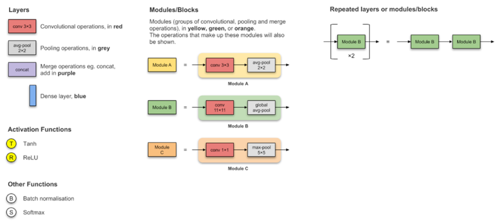
LeNet-5 (1998)
First CNN
2 convolutions + 3 fully connected layers
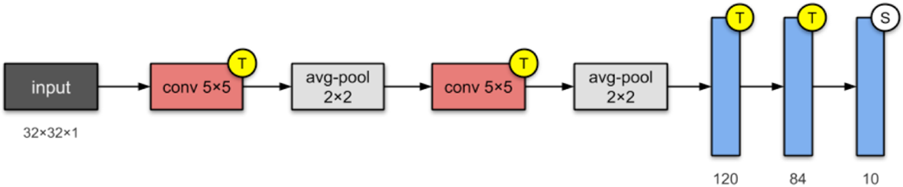
AlexNet (2012)
ReLU activations and dropout are introduced
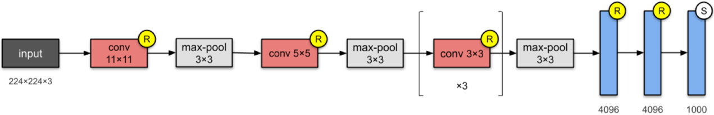
VGG-16 (2014)
2x deeper than AlexNet
More layers (16 or 19 for VGG-19) but smaller filters
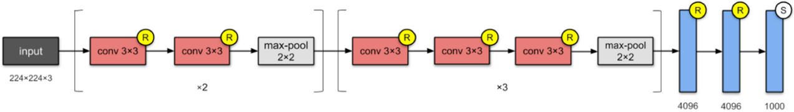
Inception-v1 (2014)
Stack modules containing convolutional layers (rather than stacking convolutional layers)
Stem and inception modules were named in later versions – “network within a network” concept
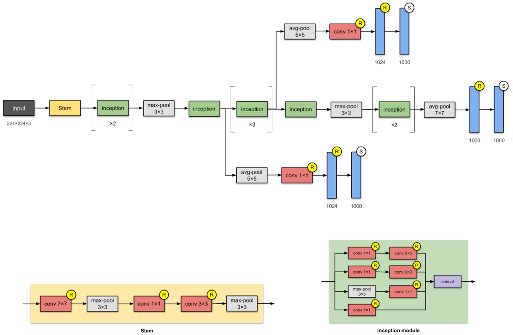
ResNET-50 (2015)
Popularised skip-connections & batch normalization
Deep: 152 CNN layers
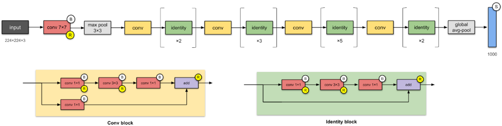
ResNET-50 (2015)
Popularised skip-connections & batch normalization
Deep: 152 CNN layers
And many others, e.g., Xception (2016), Inception-v4 (2016), ResNEXT-50 (2017)
Network มีขนาดเพิ่มขึ้นเรื่อย ๆ เมื่อเวลาผ่านไป เป็นผลจากความก้าวหน้าของ computational power
PyTorch มี pre-trained neural network architecture ให้ใช้มากมาย ส่วนใหญ่ถูก pre-trained โดยใช้ ImageNet dataset เราสามารถเข้าถึง pre-trained network เหล่านี้ได้โดยใช้ torchvision.models ดูตัวอย่างได้ด้านล่าง
# Load a pre-trained AlexNet model from torchvision.models
# See its source code at https://pytorch.org/vision/stable/_modules/torchvision/models/alexnet.html
alexnet = models.alexnet(pretrained=True).to(device)
print(alexnet)
summary(alexnet, input_size=(3, 300, 300))
AlexNet(
(features): Sequential(
(0): Conv2d(3, 64, kernel_size=(11, 11), stride=(4, 4), padding=(2, 2))
(1): ReLU(inplace=True)
(2): MaxPool2d(kernel_size=3, stride=2, padding=0, dilation=1, ceil_mode=False)
(3): Conv2d(64, 192, kernel_size=(5, 5), stride=(1, 1), padding=(2, 2))
(4): ReLU(inplace=True)
(5): MaxPool2d(kernel_size=3, stride=2, padding=0, dilation=1, ceil_mode=False)
(6): Conv2d(192, 384, kernel_size=(3, 3), stride=(1, 1), padding=(1, 1))
(7): ReLU(inplace=True)
(8): Conv2d(384, 256, kernel_size=(3, 3), stride=(1, 1), padding=(1, 1))
(9): ReLU(inplace=True)
(10): Conv2d(256, 256, kernel_size=(3, 3), stride=(1, 1), padding=(1, 1))
(11): ReLU(inplace=True)
(12): MaxPool2d(kernel_size=3, stride=2, padding=0, dilation=1, ceil_mode=False)
)
(avgpool): AdaptiveAvgPool2d(output_size=(6, 6))
(classifier): Sequential(
(0): Dropout(p=0.5, inplace=False)
(1): Linear(in_features=9216, out_features=4096, bias=True)
(2): ReLU(inplace=True)
(3): Dropout(p=0.5, inplace=False)
(4): Linear(in_features=4096, out_features=4096, bias=True)
(5): ReLU(inplace=True)
(6): Linear(in_features=4096, out_features=1000, bias=True)
)
)
----------------------------------------------------------------
Layer (type) Output Shape Param #
================================================================
Conv2d-1 [-1, 64, 74, 74] 23,296
ReLU-2 [-1, 64, 74, 74] 0
MaxPool2d-3 [-1, 64, 36, 36] 0
Conv2d-4 [-1, 192, 36, 36] 307,392
ReLU-5 [-1, 192, 36, 36] 0
MaxPool2d-6 [-1, 192, 17, 17] 0
Conv2d-7 [-1, 384, 17, 17] 663,936
ReLU-8 [-1, 384, 17, 17] 0
Conv2d-9 [-1, 256, 17, 17] 884,992
ReLU-10 [-1, 256, 17, 17] 0
Conv2d-11 [-1, 256, 17, 17] 590,080
ReLU-12 [-1, 256, 17, 17] 0
MaxPool2d-13 [-1, 256, 8, 8] 0
AdaptiveAvgPool2d-14 [-1, 256, 6, 6] 0
Dropout-15 [-1, 9216] 0
Linear-16 [-1, 4096] 37,752,832
ReLU-17 [-1, 4096] 0
Dropout-18 [-1, 4096] 0
Linear-19 [-1, 4096] 16,781,312
ReLU-20 [-1, 4096] 0
Linear-21 [-1, 1000] 4,097,000
================================================================
Total params: 61,100,840
Trainable params: 61,100,840
Non-trainable params: 0
----------------------------------------------------------------
Input size (MB): 1.03
Forward/backward pass size (MB): 14.58
Params size (MB): 233.08
Estimated Total Size (MB): 248.69
----------------------------------------------------------------
# Obtain the weight kernels of the first convolutional layer
# The information about AlexNet printed above tells us that
# - The first convolutional layer is the first layer of the network (index=0)
# - There are 64 kernels, each of which has 3 channels with a size of 11x11
first_conv_layer = alexnet.features[0]
weights = first_conv_layer.weight.data
print(weights.shape)
# Normalise the kernels for plotting
min_w, max_w = weights.min(), weights.max()
weights -= min_w
weights /= (max_w-min_w)
# Display the kernels
fig, axarr = plt.subplots(8, 8, figsize=(12, 12))
axarr = axarr.flatten()
for ax, kernel in zip(axarr, weights.cpu().numpy()): # Need to send the weights to the CPU for plotting
# Plot the three channels at the same time
ax.imshow(np.swapaxes(kernel, 0, 2)) # RGB
ax.set_axis_off()
torch.Size([64, 3, 11, 11])
# Obtain the weight kernels of the second convolutional layer
# The information about AlexNet printed above tells us that
# - The second convolutional layer is the fourth layer of the network (index=3)
# - There are 192 kernels, each of which has 64 channels with a size of 5x5
second_conv_layer = alexnet.features[3]
weights = second_conv_layer.weight.data
print(weights.shape)
# Normalise the kernels for plotting
min_w, max_w = weights.min(), weights.max()
weights -= min_w
weights /= (max_w-min_w)
# Display the kernels
fig, axarr = plt.subplots(12, 16, figsize=(12, 12))
axarr = axarr.flatten()
for ax, kernel in zip(axarr, weights[:, 0, :, :].cpu().numpy()): # Show only the first channel of each kernel
ax.imshow(kernel)
ax.set_axis_off()
torch.Size([192, 64, 5, 5])
# Load a pre-trained ResNet-18 model
resnet = models.resnet18(pretrained=True).to(device)
print(resnet)
summary(resnet, input_size=(3, 300, 300))
ResNet(
(conv1): Conv2d(3, 64, kernel_size=(7, 7), stride=(2, 2), padding=(3, 3), bias=False)
(bn1): BatchNorm2d(64, eps=1e-05, momentum=0.1, affine=True, track_running_stats=True)
(relu): ReLU(inplace=True)
(maxpool): MaxPool2d(kernel_size=3, stride=2, padding=1, dilation=1, ceil_mode=False)
(layer1): Sequential(
(0): BasicBlock(
(conv1): Conv2d(64, 64, kernel_size=(3, 3), stride=(1, 1), padding=(1, 1), bias=False)
(bn1): BatchNorm2d(64, eps=1e-05, momentum=0.1, affine=True, track_running_stats=True)
(relu): ReLU(inplace=True)
(conv2): Conv2d(64, 64, kernel_size=(3, 3), stride=(1, 1), padding=(1, 1), bias=False)
(bn2): BatchNorm2d(64, eps=1e-05, momentum=0.1, affine=True, track_running_stats=True)
)
(1): BasicBlock(
(conv1): Conv2d(64, 64, kernel_size=(3, 3), stride=(1, 1), padding=(1, 1), bias=False)
(bn1): BatchNorm2d(64, eps=1e-05, momentum=0.1, affine=True, track_running_stats=True)
(relu): ReLU(inplace=True)
(conv2): Conv2d(64, 64, kernel_size=(3, 3), stride=(1, 1), padding=(1, 1), bias=False)
(bn2): BatchNorm2d(64, eps=1e-05, momentum=0.1, affine=True, track_running_stats=True)
)
)
(layer2): Sequential(
(0): BasicBlock(
(conv1): Conv2d(64, 128, kernel_size=(3, 3), stride=(2, 2), padding=(1, 1), bias=False)
(bn1): BatchNorm2d(128, eps=1e-05, momentum=0.1, affine=True, track_running_stats=True)
(relu): ReLU(inplace=True)
(conv2): Conv2d(128, 128, kernel_size=(3, 3), stride=(1, 1), padding=(1, 1), bias=False)
(bn2): BatchNorm2d(128, eps=1e-05, momentum=0.1, affine=True, track_running_stats=True)
(downsample): Sequential(
(0): Conv2d(64, 128, kernel_size=(1, 1), stride=(2, 2), bias=False)
(1): BatchNorm2d(128, eps=1e-05, momentum=0.1, affine=True, track_running_stats=True)
)
)
(1): BasicBlock(
(conv1): Conv2d(128, 128, kernel_size=(3, 3), stride=(1, 1), padding=(1, 1), bias=False)
(bn1): BatchNorm2d(128, eps=1e-05, momentum=0.1, affine=True, track_running_stats=True)
(relu): ReLU(inplace=True)
(conv2): Conv2d(128, 128, kernel_size=(3, 3), stride=(1, 1), padding=(1, 1), bias=False)
(bn2): BatchNorm2d(128, eps=1e-05, momentum=0.1, affine=True, track_running_stats=True)
)
)
(layer3): Sequential(
(0): BasicBlock(
(conv1): Conv2d(128, 256, kernel_size=(3, 3), stride=(2, 2), padding=(1, 1), bias=False)
(bn1): BatchNorm2d(256, eps=1e-05, momentum=0.1, affine=True, track_running_stats=True)
(relu): ReLU(inplace=True)
(conv2): Conv2d(256, 256, kernel_size=(3, 3), stride=(1, 1), padding=(1, 1), bias=False)
(bn2): BatchNorm2d(256, eps=1e-05, momentum=0.1, affine=True, track_running_stats=True)
(downsample): Sequential(
(0): Conv2d(128, 256, kernel_size=(1, 1), stride=(2, 2), bias=False)
(1): BatchNorm2d(256, eps=1e-05, momentum=0.1, affine=True, track_running_stats=True)
)
)
(1): BasicBlock(
(conv1): Conv2d(256, 256, kernel_size=(3, 3), stride=(1, 1), padding=(1, 1), bias=False)
(bn1): BatchNorm2d(256, eps=1e-05, momentum=0.1, affine=True, track_running_stats=True)
(relu): ReLU(inplace=True)
(conv2): Conv2d(256, 256, kernel_size=(3, 3), stride=(1, 1), padding=(1, 1), bias=False)
(bn2): BatchNorm2d(256, eps=1e-05, momentum=0.1, affine=True, track_running_stats=True)
)
)
(layer4): Sequential(
(0): BasicBlock(
(conv1): Conv2d(256, 512, kernel_size=(3, 3), stride=(2, 2), padding=(1, 1), bias=False)
(bn1): BatchNorm2d(512, eps=1e-05, momentum=0.1, affine=True, track_running_stats=True)
(relu): ReLU(inplace=True)
(conv2): Conv2d(512, 512, kernel_size=(3, 3), stride=(1, 1), padding=(1, 1), bias=False)
(bn2): BatchNorm2d(512, eps=1e-05, momentum=0.1, affine=True, track_running_stats=True)
(downsample): Sequential(
(0): Conv2d(256, 512, kernel_size=(1, 1), stride=(2, 2), bias=False)
(1): BatchNorm2d(512, eps=1e-05, momentum=0.1, affine=True, track_running_stats=True)
)
)
(1): BasicBlock(
(conv1): Conv2d(512, 512, kernel_size=(3, 3), stride=(1, 1), padding=(1, 1), bias=False)
(bn1): BatchNorm2d(512, eps=1e-05, momentum=0.1, affine=True, track_running_stats=True)
(relu): ReLU(inplace=True)
(conv2): Conv2d(512, 512, kernel_size=(3, 3), stride=(1, 1), padding=(1, 1), bias=False)
(bn2): BatchNorm2d(512, eps=1e-05, momentum=0.1, affine=True, track_running_stats=True)
)
)
(avgpool): AdaptiveAvgPool2d(output_size=(1, 1))
(fc): Linear(in_features=512, out_features=1000, bias=True)
)
----------------------------------------------------------------
Layer (type) Output Shape Param #
================================================================
Conv2d-1 [-1, 64, 150, 150] 9,408
BatchNorm2d-2 [-1, 64, 150, 150] 128
ReLU-3 [-1, 64, 150, 150] 0
MaxPool2d-4 [-1, 64, 75, 75] 0
Conv2d-5 [-1, 64, 75, 75] 36,864
BatchNorm2d-6 [-1, 64, 75, 75] 128
ReLU-7 [-1, 64, 75, 75] 0
Conv2d-8 [-1, 64, 75, 75] 36,864
BatchNorm2d-9 [-1, 64, 75, 75] 128
ReLU-10 [-1, 64, 75, 75] 0
BasicBlock-11 [-1, 64, 75, 75] 0
Conv2d-12 [-1, 64, 75, 75] 36,864
BatchNorm2d-13 [-1, 64, 75, 75] 128
ReLU-14 [-1, 64, 75, 75] 0
Conv2d-15 [-1, 64, 75, 75] 36,864
BatchNorm2d-16 [-1, 64, 75, 75] 128
ReLU-17 [-1, 64, 75, 75] 0
BasicBlock-18 [-1, 64, 75, 75] 0
Conv2d-19 [-1, 128, 38, 38] 73,728
BatchNorm2d-20 [-1, 128, 38, 38] 256
ReLU-21 [-1, 128, 38, 38] 0
Conv2d-22 [-1, 128, 38, 38] 147,456
BatchNorm2d-23 [-1, 128, 38, 38] 256
Conv2d-24 [-1, 128, 38, 38] 8,192
BatchNorm2d-25 [-1, 128, 38, 38] 256
ReLU-26 [-1, 128, 38, 38] 0
BasicBlock-27 [-1, 128, 38, 38] 0
Conv2d-28 [-1, 128, 38, 38] 147,456
BatchNorm2d-29 [-1, 128, 38, 38] 256
ReLU-30 [-1, 128, 38, 38] 0
Conv2d-31 [-1, 128, 38, 38] 147,456
BatchNorm2d-32 [-1, 128, 38, 38] 256
ReLU-33 [-1, 128, 38, 38] 0
BasicBlock-34 [-1, 128, 38, 38] 0
Conv2d-35 [-1, 256, 19, 19] 294,912
BatchNorm2d-36 [-1, 256, 19, 19] 512
ReLU-37 [-1, 256, 19, 19] 0
Conv2d-38 [-1, 256, 19, 19] 589,824
BatchNorm2d-39 [-1, 256, 19, 19] 512
Conv2d-40 [-1, 256, 19, 19] 32,768
BatchNorm2d-41 [-1, 256, 19, 19] 512
ReLU-42 [-1, 256, 19, 19] 0
BasicBlock-43 [-1, 256, 19, 19] 0
Conv2d-44 [-1, 256, 19, 19] 589,824
BatchNorm2d-45 [-1, 256, 19, 19] 512
ReLU-46 [-1, 256, 19, 19] 0
Conv2d-47 [-1, 256, 19, 19] 589,824
BatchNorm2d-48 [-1, 256, 19, 19] 512
ReLU-49 [-1, 256, 19, 19] 0
BasicBlock-50 [-1, 256, 19, 19] 0
Conv2d-51 [-1, 512, 10, 10] 1,179,648
BatchNorm2d-52 [-1, 512, 10, 10] 1,024
ReLU-53 [-1, 512, 10, 10] 0
Conv2d-54 [-1, 512, 10, 10] 2,359,296
BatchNorm2d-55 [-1, 512, 10, 10] 1,024
Conv2d-56 [-1, 512, 10, 10] 131,072
BatchNorm2d-57 [-1, 512, 10, 10] 1,024
ReLU-58 [-1, 512, 10, 10] 0
BasicBlock-59 [-1, 512, 10, 10] 0
Conv2d-60 [-1, 512, 10, 10] 2,359,296
BatchNorm2d-61 [-1, 512, 10, 10] 1,024
ReLU-62 [-1, 512, 10, 10] 0
Conv2d-63 [-1, 512, 10, 10] 2,359,296
BatchNorm2d-64 [-1, 512, 10, 10] 1,024
ReLU-65 [-1, 512, 10, 10] 0
BasicBlock-66 [-1, 512, 10, 10] 0
AdaptiveAvgPool2d-67 [-1, 512, 1, 1] 0
Linear-68 [-1, 1000] 513,000
================================================================
Total params: 11,689,512
Trainable params: 11,689,512
Non-trainable params: 0
----------------------------------------------------------------
Input size (MB): 1.03
Forward/backward pass size (MB): 114.26
Params size (MB): 44.59
Estimated Total Size (MB): 159.88
----------------------------------------------------------------
# Obtain the weight kernels of the first convolutional layer
first_conv_layer = resnet.conv1
weights = first_conv_layer.weight.data
print(weights.shape)
# Normalise the kernels for plotting
min_w, max_w = weights.min(), weights.max()
weights -= min_w
weights /= (max_w-min_w)
# Display the kernels
fig, axarr = plt.subplots(8, 8, figsize=(12, 12))
axarr = axarr.flatten()
for ax, kernel in zip(axarr, weights.cpu().numpy()):
ax.imshow(np.swapaxes(kernel, 0, 2))
ax.set_axis_off()
torch.Size([64, 3, 7, 7])
U-nets#
จาก CNN architecture แบบที่ผ่าน ๆ มา ข้อมูลในภาพ input ถูกสกัดให้มี dimensionality ลดลง และจบที่การใช้ softmax แปลงเป็น output
แทนที่เราจะจบที่ softmax เราจะเพิ่ม dimensionality แทน (upsampling/upscaling)
U-Net เป็น architecture ที่เป็น conventional autoencoder ชนิดหนึ่ง โดย output ที่ได้จะเป็นภาพ
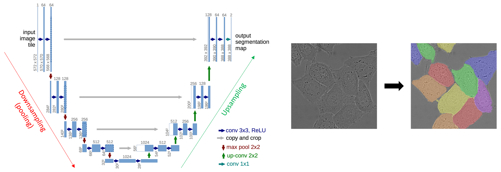
Upsampling#
วิธี upsampling ที่นิยม เช่น nearest neighbour, “bed of nails”, max unpooling, transposed convolution (up-convolution)
Nearest neighbour
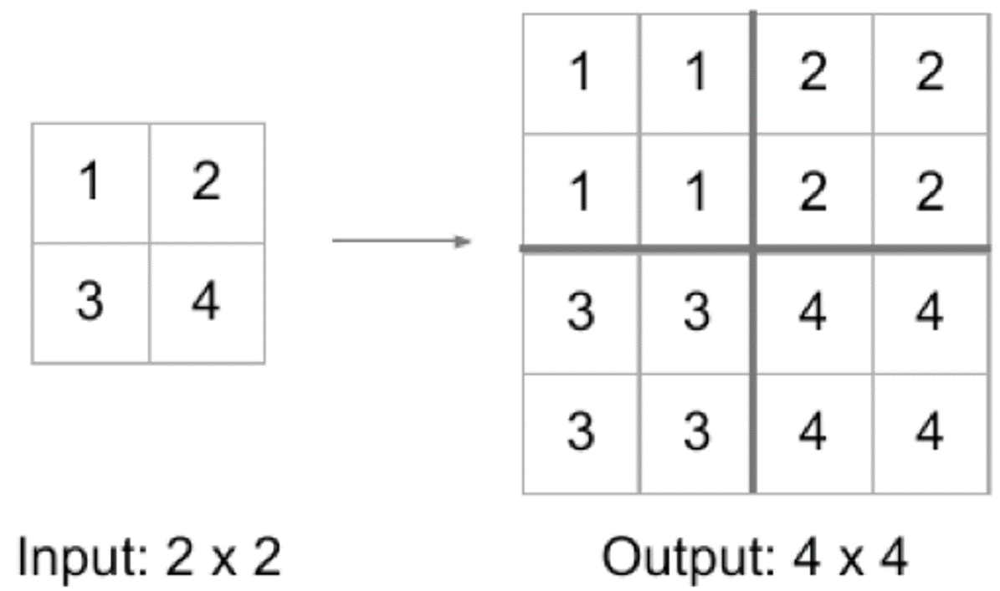
Bed of nails
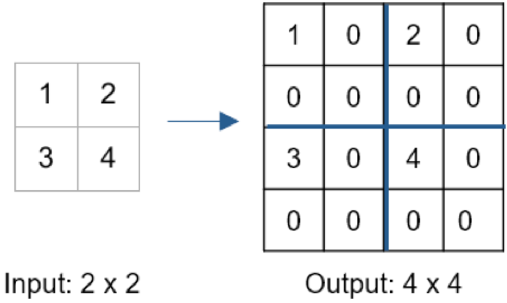
Max unpooling
ใช้เมื่อตำแหน่งในภาพมีความสำคัญ
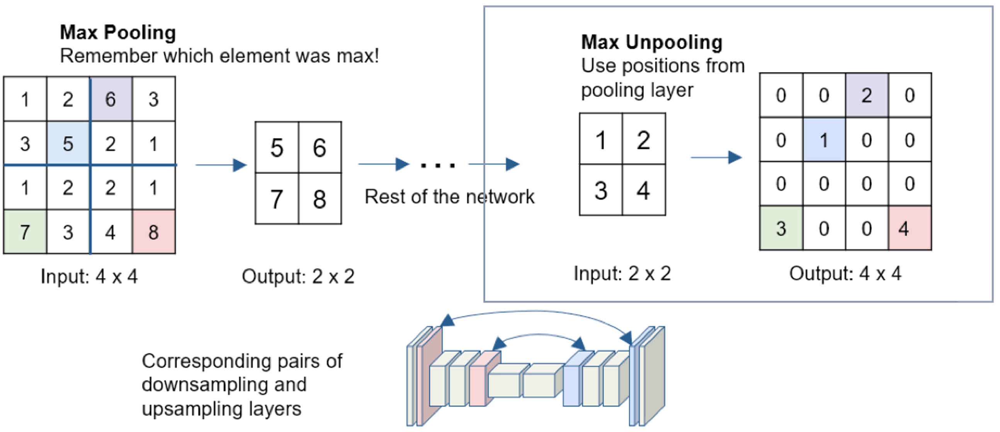
Transposed convolution (up-convolution)
Kernel ถูก transposed (หมุน \(180^\circ\)) ก่อนถูก convoluted
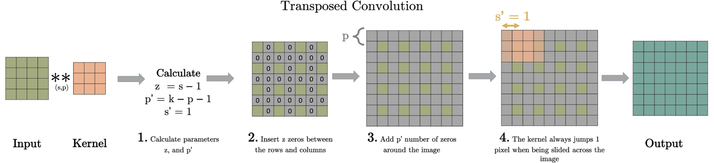
จากภาพด้านบน \(s\) = stride, \(p\) = padding, \(k\) = kernel size
เราใช้ \(s\), \(p\), \(k\) คำนวณ \(z\) กับ \(p'\) โดยที่
\(z\) = จำนวน 0 ที่จะแทรกระหว่าง pixel
\(p'\) = padding ที่ใช้จริงใน transposed convolution
ส่วน \(s'\) คือ stride ที่ใช้จริงใน transposed convolution
ภาพที่ได้จาก transposed convolution มักจะมี checkerboard artifact
ตัวอย่าง transposed convolution แสดงดังภาพด้านล่าง
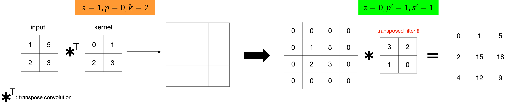
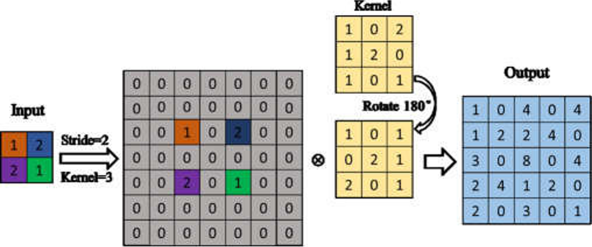
# Download the ChestMNIST dataset โดยใช้คำสั่งต่อไปนี้ (ต้องติดตั้ง wget ก่อน (pip install wget))
# !python -m wget https://zenodo.org/record/6496656/files/chestmnist.npz
# !move chestmnist.npz ../data
# Import data (assuming it has been downloaded)
data_path = "../data/chestmnist.npz"
data = np.load(data_path)
print(data.files)
['train_images', 'val_images', 'test_images', 'train_labels', 'val_labels', 'test_labels']
เราต้องการปิดบาง pixel ของทุกภาพใน dataset เพื่อใช้เป็น input สำหรับ U-net ในการกู้ภาพคืน
class ChestMNIST(Dataset):
"""
Class for masking the images of the ChestMNIST dataset.
Parameters
----------
data_path : str
The path to the data.
p : float
A probability for a random mask.
split : str
A split argument to dictate what part of the data to load ("train", "validation", "test").
transform: torchvision.transforms
A transform to be applied to the data.
"""
def __init__(self, data_path, p=0.5, transform=None, split="train"):
self.data_path = data_path
self.p = p
self.transform = transform
split_dict = {"train": "train_images", "validation": "val_images", "test": "test_images"}
if split in split_dict:
self.data = np.load(data_path)[split_dict[split]]
else:
raise ValueError("split parameter must be 'train', 'validation', or 'test'")
# Transform to Tensor and add channel dimension
self.data = torch.from_numpy(self.data).unsqueeze(1)
def _get_mask(self, img_shape):
"""
Generates a binary mask of the size of the sample to
randomly erasesome data points based on the probability p.
"""
c, w, h = img_shape
masked_points = int((1 - self.p) * w * h)
masked_idx = torch.randint(0, w * h, (masked_points,))
mask = torch.ones((w * h))
mask[masked_idx] = 0
mask = mask.view(1, w, h)
mask.repeat(c, 1, 1)
return mask
def __getitem__(self, idx):
sample = self.data[idx]
# Apply transforms
if self.transform:
sample = self.transform(sample)
# Mask data
mask = self._get_mask(sample.shape)
masked_sample = sample * mask
return masked_sample, sample
def __len__(self):
return len(self.data)
# Instantiate the class for a training set and a validation set
train_dataset = ChestMNIST(data_path, split="train")
val_dataset = ChestMNIST(data_path, split="validation")
# Instantiate a U-net
set_seed(42)
model = UNet(
spatial_dims=2,
in_channels=1,
out_channels=1,
channels=(8, 8, 8),
strides=(1, 1),
act="mish"
).to(device)
summ = summary(
model,
input_size=(1, 28, 28) # Inputs are grayscale (1 channel) images with a size of 28x28
)
----------------------------------------------------------------
Layer (type) Output Shape Param #
================================================================
Conv2d-1 [-1, 8, 28, 28] 80
InstanceNorm2d-2 [-1, 8, 28, 28] 0
Dropout-3 [-1, 8, 28, 28] 0
Mish-4 [-1, 8, 28, 28] 0
Conv2d-5 [-1, 8, 28, 28] 584
InstanceNorm2d-6 [-1, 8, 28, 28] 0
Dropout-7 [-1, 8, 28, 28] 0
Mish-8 [-1, 8, 28, 28] 0
Conv2d-9 [-1, 8, 28, 28] 584
InstanceNorm2d-10 [-1, 8, 28, 28] 0
Dropout-11 [-1, 8, 28, 28] 0
Mish-12 [-1, 8, 28, 28] 0
SkipConnection-13 [-1, 16, 28, 28] 0
ConvTranspose2d-14 [-1, 8, 28, 28] 1,160
InstanceNorm2d-15 [-1, 8, 28, 28] 0
Dropout-16 [-1, 8, 28, 28] 0
Mish-17 [-1, 8, 28, 28] 0
SkipConnection-18 [-1, 16, 28, 28] 0
ConvTranspose2d-19 [-1, 1, 28, 28] 145
================================================================
Total params: 2,553
Trainable params: 2,553
Non-trainable params: 0
----------------------------------------------------------------
Input size (MB): 0.00
Forward/backward pass size (MB): 0.96
Params size (MB): 0.01
Estimated Total Size (MB): 0.98
----------------------------------------------------------------
# Hyperparameters
set_seed(42)
p = 0.6
lr = 1e-2
batch_size = 128
num_workers = 0
wd = 1e-6
n_epochs = 20
optimiser = torch.optim.Adam(params=model.parameters(), lr=lr, weight_decay=wd)
mseloss = nn.MSELoss()
# Dataset and dataloader
transform = Compose([Lambda(lambda x: x/255.)])
train_dataset = ChestMNIST(data_path, split="train", p=p, transform=transform)
val_dataset = ChestMNIST(data_path, split="validation", p=p, transform=transform)
train_loader = DataLoader(dataset=train_dataset, batch_size=batch_size, num_workers=num_workers, shuffle=True)
val_loader = DataLoader(dataset=val_dataset, batch_size=batch_size, num_workers=num_workers, shuffle=False)
def train2(model, optimizer, criterion, data_loader):
model.train()
train_loss = 0.
for inp, target in data_loader:
inp, target = inp.to(device), target.to(device)
optimizer.zero_grad()
outp = model(inp)
loss = criterion(outp, target)
loss.backward()
train_loss += loss*inp.size(0)
optimizer.step()
avg_train_loss = train_loss / len(data_loader.dataset)
return avg_train_loss
def validate2(model, criterion, data_loader):
model.eval()
val_loss = 0.
with torch.no_grad():
for inp, target in data_loader:
inp, target = inp.to(device), target.to(device)
outp = model(inp)
loss = criterion(outp, target)
val_loss += loss*inp.size(0)
avg_val_loss = val_loss / len(data_loader.dataset)
return avg_val_loss
# Compute log loss of the model and plot it over epoches
# You can use the "livelossplot" module to plot a real-time evolution of loss
train_losses, val_losses = [], []
for epoch in range(n_epochs):
train_loss = train2(model, optimiser, mseloss, train_loader)
train_losses.append(train_loss.item())
val_loss = validate2(model, mseloss, val_loader)
val_losses.append(val_loss.item())
fig, ax = plt.subplots(figsize=(5, 5))
ax.plot(range(1, n_epochs+1), train_losses, label="training")
ax.plot(range(1, n_epochs+1), val_losses, label="validation")
ax.set(title="log loss", xlabel="epoch")
ax.legend();
# Visualise 32 input, reconstructed and target samples from a validation batch
inputs, targets = next(iter(val_loader))
inputs, targets = inputs[:32], targets[:32]
outputs = model(inputs.to(device))
input_grid = make_grid(inputs)
output_grid = make_grid(outputs)
target_grid = make_grid(targets)
fig, axes = plt.subplots(3, 1, figsize=(25, 15))
axes[0].imshow(input_grid.detach().cpu().permute(1, 2, 0))
axes[0].set(title="Input images", xticks=[], yticks=[])
axes[1].imshow(target_grid.detach().cpu().permute(1, 2, 0))
axes[1].set(title="Target images", xticks=[], yticks=[])
axes[2].imshow(output_grid.detach().cpu().permute(1, 2, 0))
axes[2].set(title="Output images", xticks=[], yticks=[]);
Clipping input data to the valid range for imshow with RGB data ([0..1] for floats or [0..255] for integers).
Receptive field#
Receptive field คือบริเวณในภาพ input ที่มีผลต่อ output
Receptive field จะกำหนดค่า hyperparameter (filter size, stride, จำนวน convolutional layer) ที่เราควรใช้เพื่อรองรับ receptive field ทั้งหมด
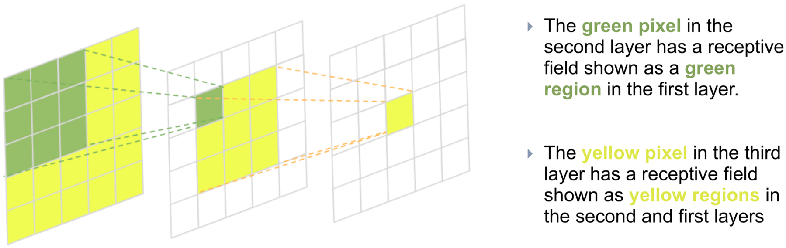